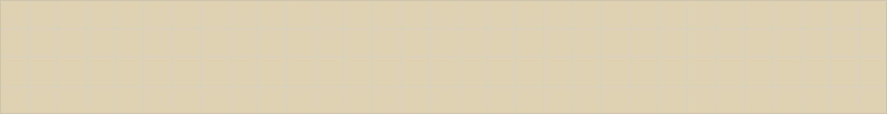
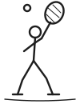
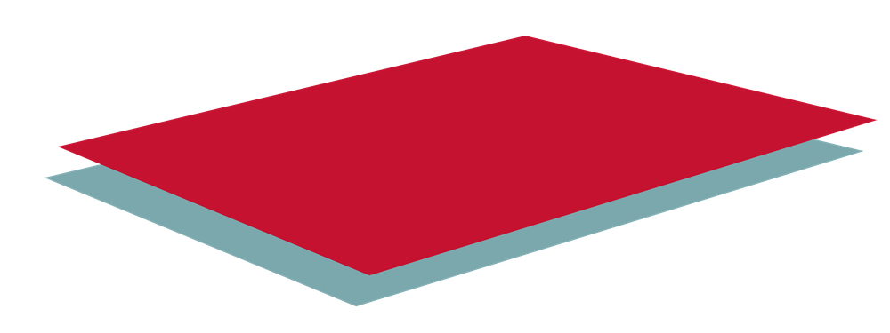
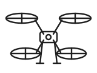
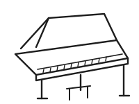
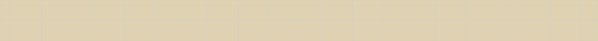
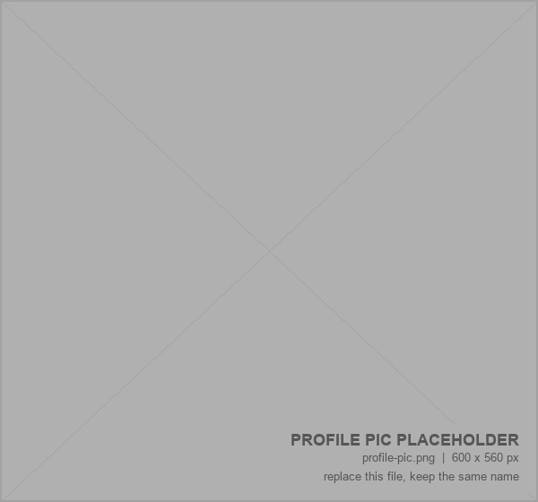

Mechanical engineering student @CMU drones, mechanisms, lego & music




I love designing clever mechanisms to simplify interfaces, from autonomous drones to lego machines and accessible UI/UX.
Also enjoy connecting through music, cooking, more!